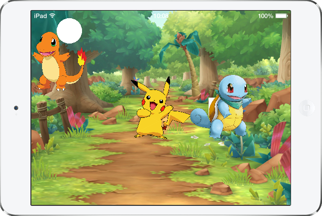
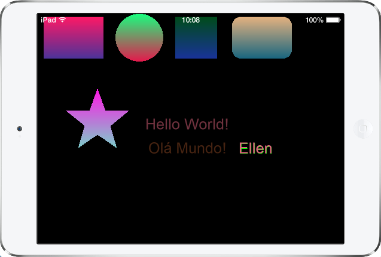

Projetos desenvolvidos em Lua/Corona SDK durante o curso “Além de Jogar, eu Faço Jogos!” do CPDI em parceria com a Cooperforte, durante o ano de 2023.
Iniciamos o curso com uma introdução à linguagem de programação LUA, com as funções aritméticas.
Clique aqui - Funções aritméticasOs objetos de exibição abrangem uma ampla variedade de objetos visuais que colocamos no palco ou em grupos de exibição. Isso inclui imagens, texto, formas, linhas, sprites e etc.
Neste módulo, iniciamos a criação de formas geométricas, aplicando cores, degradês, além de criação de texto com aplicação de cores e sombras.
Os grupos de exibição são criados para separar os objetos em "locais" diferentes: